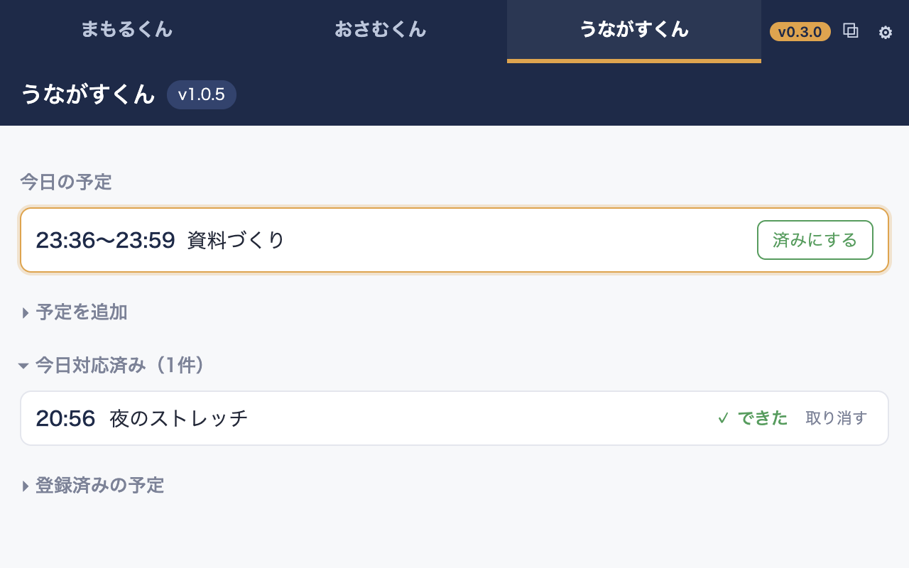

上のタブを押すだけで、3本の拡張機能を同じ場所で行き来できます（動画内のうながすくんは開発中の次期バージョンです）。

自分で公開してきた3本の拡張機能（まもるくん・おさむくん・うながすくん）を、1つのサイドパネルにまとめて使えるようにしたハブです。1本ずつ別々の窓を開くと画面がふさがってしまう、という自分自身の困りごとから作りました。
Chrome の仕組み上、拡張機能の画面はよその拡張機能から勝手に取り込めないようになっています。まとめるくんが3本を表示できるのは、3本の側で「まとめるくんにだけ表示を許可する」設定を入れてある、いわば公式どうしの連携だからです。